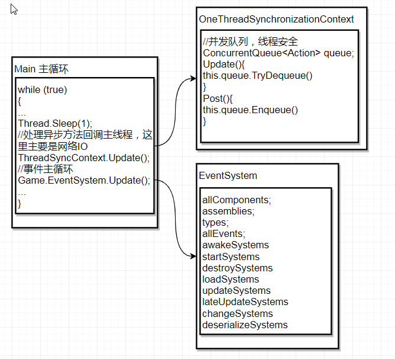
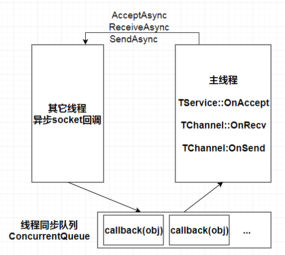
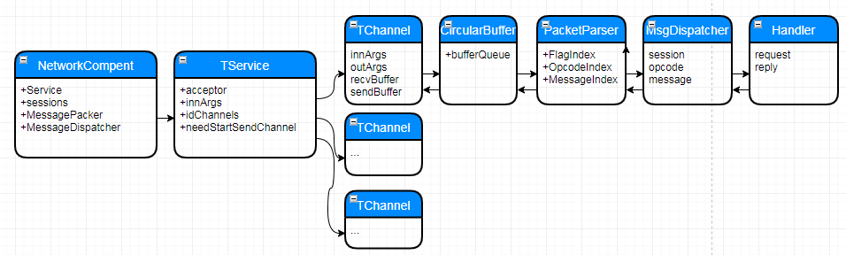
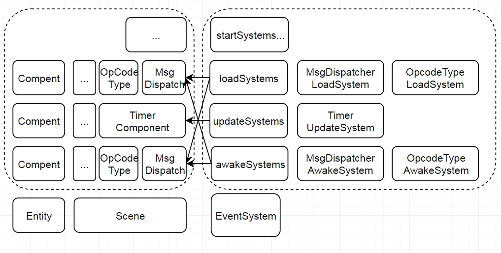
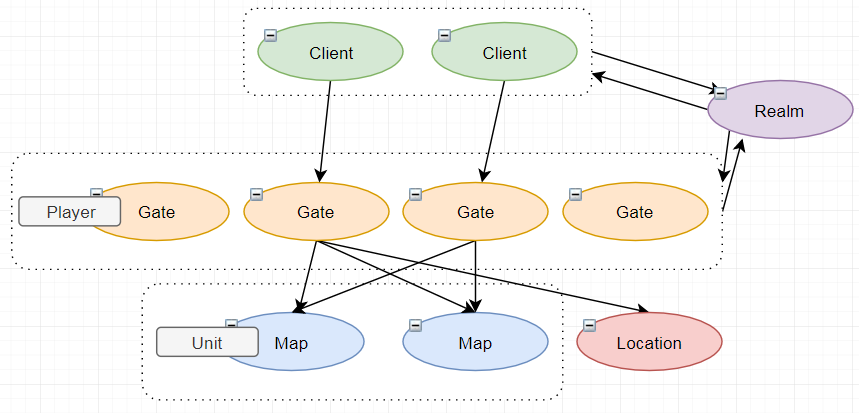

ET服务端阅读笔记
知识准备
ET用c#.dotnet实现了一套分布式游戏服务端，特点是能与unity共享逻辑代码，运行热更新，开发效率高（游戏逻辑单线程）等等。
读读代码，做做笔记。
从单进程来看
Main主循环
1 | while (true) |
可以看到在服务器的帧里做了两个事情，OneThreadSynchronizationContext的update和EventSystem的update,如图,

- OneThreadSynchronizationContext：继承SynchronizationContext，作用是处理socket异步回调的io事件，回到主线程处理。实现方式是使用线程安全的并发队列ConcurrentQueue。
- EventSystem：事件机制，ET服务端的一大特点是它的组件设计ESC.EventSystem一帧要处理就是除了io回调的其它主逻辑，比如定时器（timerCompent.update）,网络发包（NetworkCompent.update）,各个updateSystems的更新逻辑。
后面主要对这两个模块实现进行展开
网络层
网络IO
ET同时支持kcp tcp websocket协议。这里主要从tcp的实现来看。

- 网络IO:框架使用的是c#的异步socket,所有socket回调回到主线程处理。
- ConcurrentQueue:并发队列，线程安全
维护Connections
维护connections是实现了跟protobuf一样概念的Service和Channel，如下

NetworkCompent组件:
- InnerNetworkCompent（内部服务端进程连接）,OuterNetworkCompent（处理玩家连接）。
- sessions:维护所有连接，session（channel+rpcId）
- service:基类AService,根据类型(kcp,tcp or websocket)替换成具体Service
TService类:
- acceptor:由accpectAsync回调创建channel
- idChannels:Dictionary（id->channel）
- needStartSendChannel：所有send操作都会记录在needStartSendChannel,最后由update触发消息发送
TChannel类:
- innArgs&&outArgs:SocketAsyncEventArgs异步socket参数，设置buffer和回调
- recvBuffer&&sendBuffer：每个channel预申请ChunkSize8192的CircleBuffer
PackerParser解包:
- 消息结构：SizeLength | FlagIndex | OpcodeIndex | Message
- SizeLength:message总长度
- FlagIndex:0x00表示request;0x01表示rpc的response,不走dispatcher,走requestCallback
OpcodeIndex:协议号，根据协议号找到对应的handler(OpcodeTypeComponent实现，利用c#的反射GetTypes，GetCustomAttributes），比如如下关联
1
2[Message(OuterOpcode.Actor_TransferRequest)]
public partial class Actor_TransferRequest : IActorLocationRequest {}Message:消息内容，Protobuf或MongoPacker做序列化和反序列化
Actor消息机制
ET实现了类似Actor模型的消息机制，通过ip+entityid给对象发消息
。其中有两个Actor相关的类：
ActorMessageSender:已知entity的instanceId时使用，通过entityid找到appid,给对应appid进程发消息
1
2
3
4
5public static long GenerateId()
{
long time = TimeHelper.ClientNowSeconds();
return (AppId << 48) + (time << 16) + ++value;
}ActorLocationSender:已知entity的Id时使用,entity场景跳转时，向location服务注册自己的id，ActorLocationSender先请求Location查询entity位置。
- 什么是Id和instanceId:比如entity在map(也就是Cell)上，entity会在场景 中跳转，这时只能获取到它的Id，它的实例Id会随跳转变化。
单线程异步
c#的async/await和TaskCompletionSource，应用于网络IO,比如一个Call的调用1
2
3
4
5
6
7
8
9
10
11
12
13public Task<IResponse> Call(IRequest request)
{
var tcs = new TaskCompletionSource<IResponse>();
this.requestCallback[rpcId] = (response) =>
{
tcs.SetResult(response);
};
return tcs.Task;
}
public static async ETTask<IResponse> Call(message)
{
return await session.Call(message);
}
ECS设计
ECS也就是Entity-Component-System,ET的EVENTSYSTEM都是ECS的设计。大概的框架如下：

- entity:包含多个compent
- compent:主要负责Data部分，可对应多个systems,比如OpcodeTypeComponent同时需要Load和Updata，配置两个system
- systems:主要负责逻辑部分，多个compent,比如updateSystems的update逻辑:
1 | public void Update() |
几个主要的system类型
- startSystems：update时先触发Start后update
- awakeSystems:addCompent后触发
- loadSystems:启动加载
- updateSystems:更新
- lateUpdateSystems:未实现
- ..
热更新
有了ECS的组件设计，框架将model和logic彻底分离，独立成两个dll模块。热更新只要加载hotfix.dll1
Game.EventSystem.Add(DLLType.Hotfix, DllHelper.GetHotfixAssembly());
- assemblies:通过程序集和反射读取systems
- 清空：allSystems.Clear()
- 重新加载：allSystems.Add()
可以看到，热更新必须是全部更新
多进程分布式
在组件设计的基础上，多进程的方式就是各个App加载各自需要的Componentt
manager,目前的几个AppType

- Manager:负责启动和重启其它App
- Realm:Gate的负载均衡，在GateSession里面给客户端random一个地址，同时加上sessionkey验证。
- Gate：连接客户端，创建Player对象。（也就是BigWorld的Base）
- Location:位置服务，entity在地图跳转时注册id，供对象发送消息
- Map：地图服务，创建unit对象。（也就是BigWorld的Cell）
- AllServer: 一个进程加载所有component，开发环境用